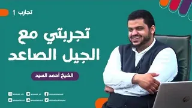
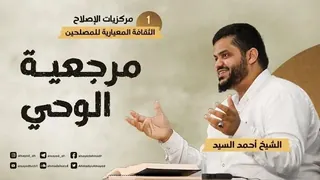

38 محاضرة
سلسلة مرئية
شرح المنهاج من ميراث النبوة
آخر تحديث 15 يوليو 2022

38 محاضرة
حكى النبي ﷺ عن المراحل التي ستمرُّ بها أُمَّته من بعده، وختم تلك المراحل بقوله: «ثم تكون خلافة على منهاج النبوة»؛ فيعلم الناظر لأحوال الأمَّة اليوم أن تلك المرحلة باتت قريبة، ولكن لا بد من مقدّمات وإعداد، ومن أهم ذلك السعي لإحياء منهاج النبوة في النفوس.

شاهد السلسلة على يوتيوب
الحلقات
38 حلقة

شرح المنهاج من ميراث النبوة 03 | تعظيم حدود الله
04
شرح المنهاج من ميراث النبوة 04 | معيار الوحي وتصحيح المعايير
05
شرح المنهاج من ميراث النبوة 05 | تفاوت مراتب الدين في الأمر والنهي والخبر
06
شرح المنهاج من ميراث النبوة 06 | أهمية التزكية وأعمال القلوب
07
شرح المنهاج من ميراث النبوة 07 | شرف العلم النافع وفضله
08
شرح المنهاج من ميراث النبوة 08 | تربية النبي ﷺ أصحابه على العمل
09
شرح المنهاج من ميراث النبوة 09 | صدق النية
10
شرح المنهاج من ميراث النبوة 10 | أهمية استحضار الغاية
11
شرح المنهاج من ميراث النبوة 11 | تحمل مسؤولية التكليف تجاه النفس والغير
12
شرح المنهاج من ميراث النبوة 12 | المسؤولية العامة تجاه الإسلام والمسلمين
13
شرح المنهاج من ميراث النبوة 13 | مركزية اتباع هدي الأنبياء
14
شرح المنهاج من ميراث النبوة 14 | فضل الإصلاح والدعوة
15
شرح المنهاج من ميراث النبوة 15 | صفات المصلحين
16
شرح المنهاج من ميراث النبوة 16 | أهمية الوعي بسبيل المجرمين
17
شرح المنهاج من ميراث النبوة 17 | العناية بالشباب
18
شرح المنهاج من ميراث النبوة 18 | دور المرأة
19
شرح المنهاج من ميراث النبوة 19 | الثبات على الاستقامة
20
شرح المنهاج من ميراث النبوة 20 | الاعتدال في الدين والحذر من الغلو
21
شرح المنهاج من ميراث النبوة 21 | مركزية حسن الخلق في حياة المسلم
22
شرح المنهاج من ميراث النبوة 22 | مفاتيح الهداية والبصيرة
23
شرح المنهاج من ميراث النبوة 23 | أهمية الصحبة الصالحة وخطورة التفرق
24
شرح المنهاج من ميراث النبوة 24 | الحذر من الفتن
25
شرح المنهاج من ميراث النبوة 25 | فهم أسباب ضعف المسلمين
26
شرح المنهاج من ميراث النبوة 26 | السنن الإلهية
27
شرح المنهاج من ميراث النبوة 27 | حسن العاقبة والتمكين بعد البلاء
28
شرح المنهاج من ميراث النبوة 28 | المبشرات بالتمكين في آخر الزمان بعد الشدائد والفتن
29
شرح المنهاج من ميراث النبوة 29 | الإسلام هو الدين الوحيد المقبول عند الله
30

عرض جميع الحلقات (30)

تابع المشاهدة
سلاسل أخرى
تجارب
محاضرتان · 23 مايو 2022


السيرة النبوية للمصلحين
32 محاضرة · 10 مارس 2022
مركزيات الإصلاح | الثقافة المعيارية للمصلحين
13 محاضرة · 7 مارس 2022
